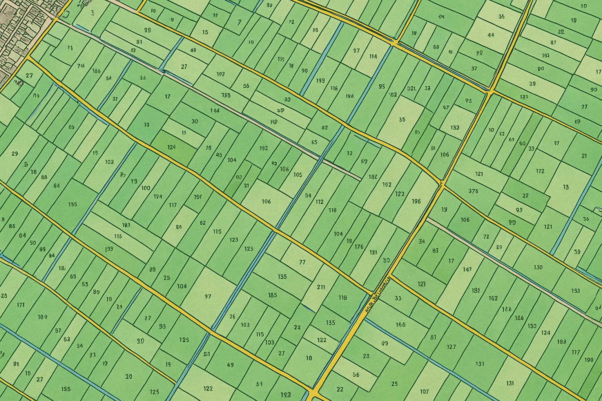
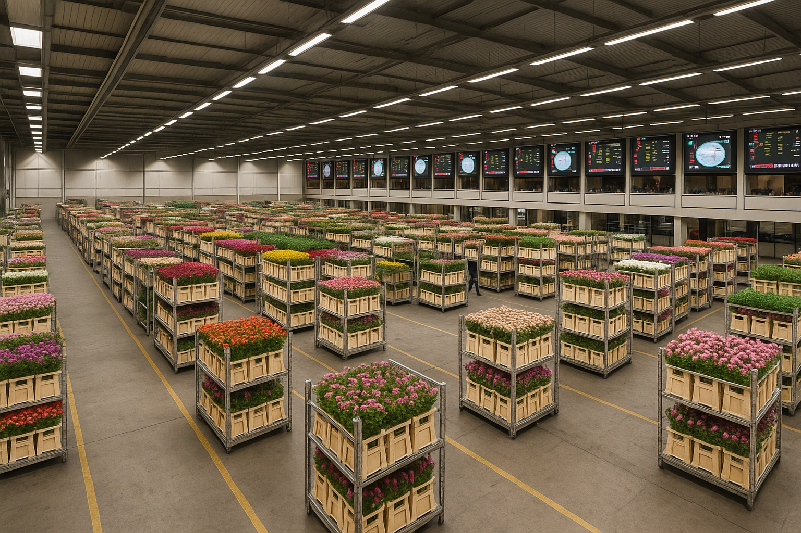
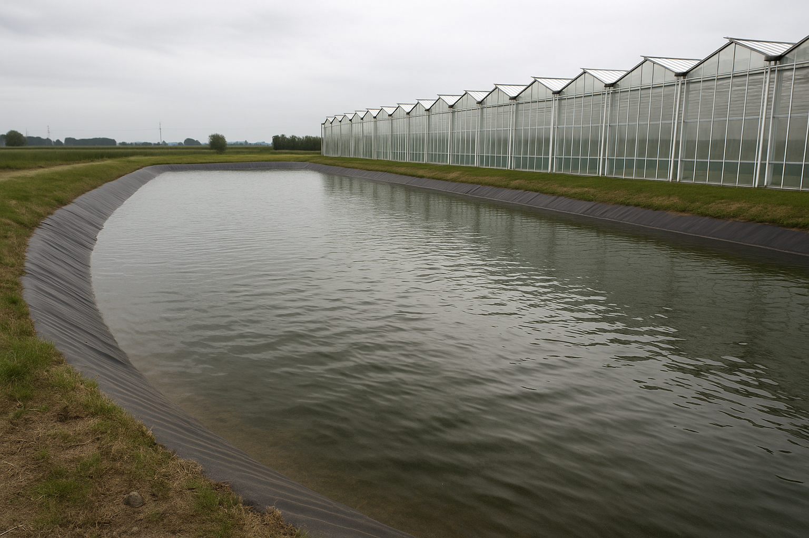

Onderwerpen in de tuinbouw
Op deze pagina vindt u informatie over verschillende onderwerpen die spelen in de Nederlandse tuinbouwsector, van structuurgegevens tot duurzaamheid.

Structuurgegevens
Informatie over aantallen bedrijven, arealen en bedrijfsgroottes binnen de verschillende tuinbouwsectoren in Nederland.
Meer over structuurgegevensFinancieel/Economische gegevens
Cijfers over omzet, export, toegevoegde waarde, winstgevendheid en investeringen binnen de tuinbouwsector.
Meer over financieel/economische gegevens

Cluster
Informatie over het tuinbouwcluster, de onderlinge verbanden tussen bedrijven en de rol van de keten binnen de tuinbouwsector.
Meer over het tuinbouwcluster

Duurzaamheid
Cijfers over energie, water, gewasbescherming, klimaatimpact en andere duurzaamheidsonderwerpen binnen de tuinbouwsector.
Meer over duurzaamheid